步兵科技
原页面：Infantry technology
步兵科技解锁新的步兵装备、摩托化装备和机械化装备，并整体提升步兵与骑兵的表现。它还包含启用并改进特种部队步兵的科技，以及一套在没有 反抗暴政的情况下强化特种部队的额外科技。
反抗暴政的情况下强化特种部队的额外科技。
其中一些科技——主要是影响摩托化和机械化装备的那些——与特殊项目相互关联，能在陆战项目中提供突破进度，并受益于任何在该类别中从事被动研究的科学家。此类科技的图标右下角会带有绿色缎带。
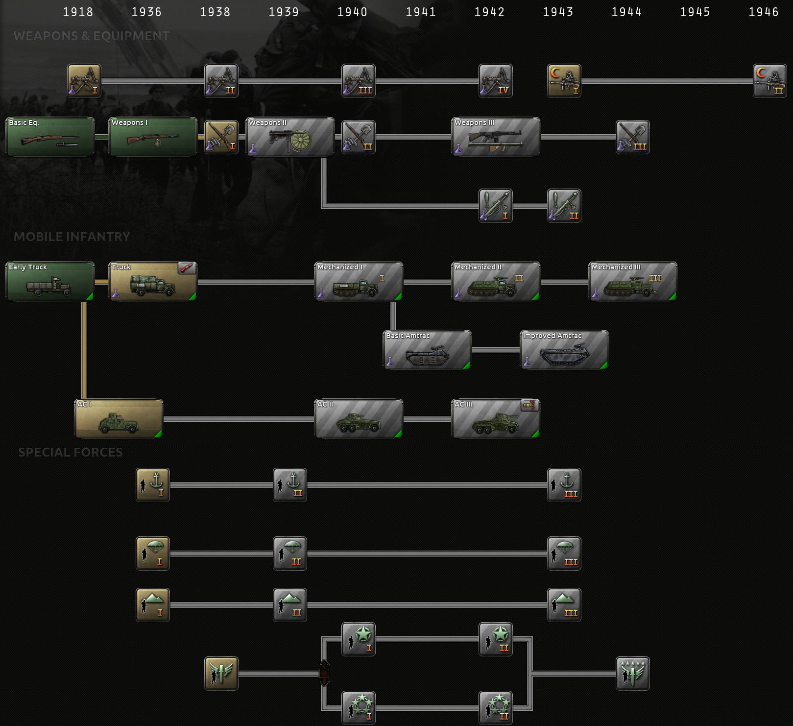
武器与装备
步兵武器
步兵装备代表一名步兵的标准工具与武器配装，是任何军队的基础。 基础步兵装备科技对所有国家都是已研究状态，而所有主要国家和许多小国都已研究 步兵装备 I科技。由于步兵装备是大多数单位类型属性的主要来源、甚至可能是唯一来源，比敌人更早解锁并装备其升级版本可以带来显著优势。
后期科技还能为步兵提供可观的硬攻和少量穿透。尽管 支援连防空和/或支援反坦克连即使使用较旧的装备，仍能为步兵师提供多得多的穿透，尤其是因为一个师 40%[1]的穿透来自穿透值最高的旅或支援连，但额外的硬攻仍能让这些师在面对坦克或机械化步兵等更硬的对手时有效得多。
支援连防空和/或支援反坦克连即使使用较旧的装备，仍能为步兵师提供多得多的穿透，尤其是因为一个师 40%[1]的穿透来自穿透值最高的旅或支援连，但额外的硬攻仍能让这些师在面对坦克或机械化步兵等更硬的对手时有效得多。
| 科技 | 年份 | 基础时间 | 前置条件 | 效果 |
|---|---|---|---|---|
基础步兵装备 大战之前及期间研制的基本步兵装备。 |
1918 | 165 days | – |
|
步兵装备 I 步兵使用的单兵武器与班组武器，以及士兵所需的各种其他装备。 |
1936 | 165 days | 基础步兵装备 | |
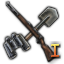 改进型步兵装备 I 步兵使用的单兵武器与班组武器，以及士兵所需的各种其他装备。改进的武器型号与更专门的装备。 |
1938 | 165 days | 步兵装备 I |
|
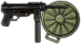 步兵装备 II 步兵使用的单兵武器与班组武器，以及士兵所需的各种其他装备。经过现代化，加入大量冲锋枪与反坦克步枪。 |
1939 | 220 days | 改进型步兵装备 I | |
改进型步兵装备 II 步兵使用的单兵武器与班组武器，以及士兵所需的各种其他装备。改进的武器型号与更专门的装备。 |
1940 | 220 days | 步兵装备 II |
|
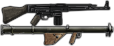 步兵装备 III 步兵使用的单兵武器与班组武器，以及士兵所需的各种其他装备。进一步现代化，加入单兵突击步枪与反坦克火箭。 |
1942 | 220 days | 改进型步兵装备 II | |
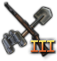 改进型步兵装备 III 步兵使用的单兵武器与班组武器，以及士兵所需的各种其他装备。进一步现代化，加入单兵突击步枪与反坦克火箭。此前仅有限配发的武器如今供应更加充足。 |
1944 | 165 days | 步兵装备 III |
|
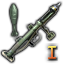 步兵反坦克 I 为步兵配备反坦克步枪，能让他们在保持机动性的同时摧毁较轻型装甲车辆。 |
1942 | 165 days | 步兵装备 II |
|
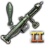 步兵反坦克 II 要让步兵有效对付装甲更厚的单位，榴弹式反坦克武器必须做得更小、更轻。 |
1943 | 165 days | 步兵反坦克 I |
|
支援武器
支援武器包括中型和重型机枪、迫击炮等需要多人操作的武器。这些科技为所有类型的步兵和骑兵提供防御和突破加成。这能减少与软攻和/或硬攻更高（取决于给定单位的硬度）的敌人作战时受到的伤害，但面对攻击属性更低的敌人时几乎不会提供额外收益。
| 科技 | 年份 | 基础时间 | 前置条件 | 效果 |
|---|---|---|---|---|
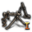 支援武器 I 自动武器正变得更加便携。冲锋枪已被证明行之有效，手持支援武器的研发也必须继续下去。 |
1918 | 165 days | – |
|
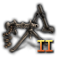 支援武器 II 结合轻机枪与重机枪特点的自动武器的发展，让我们步兵在使用装备时拥有更多样的方式。 |
1938 | 165 days | 支援武器 I |
|
支援武器 III 在保持并提高机枪可靠性的同时，我们还可以试验更高的射速，以确保持续不断的弹流具有杀伤力。 |
1940 | 165 days | 支援武器 II |
|
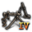 支援武器 IV 随着突击步枪的使用日益增多，研制可供所有士兵在任何环境中使用的自动武器，是现代化军队的首要任务。 |
1942 | 165 days | 支援武器 III |
|
夜视
夜视装备让士兵即使在黑暗中也能够视物，从而抵销部队在夜间作战时受到的部分-50%[2]惩罚，取得对没有此类装备的敌人的优势。当与 夜间突击战术陆军学说结合时，它们有可能完全消除所有夜间作战惩罚。
| 科技 | 年份 | 基础时间 | 前置条件 | 效果 |
|---|---|---|---|---|
夜视仪 I 能在不被发现的情况下看到敌人，是夜间作战的关键。随着红外技术的发明，我们可以为军队配备这样的装置——尽管笨重，却让这一切成为可能。 |
1943 | 275 days | – | 陆上夜袭: +10% |
夜视 II 早期的红外瞄准镜最初是为狙击手设计的，视距有限。随着便携性与观测距离的改善，这些装置可以被更多在夜间作战的部队使用。 |
1946 | 220 days | 夜视仪 I | 陆上夜袭: +15% |
机动步兵
机动步兵科技启用 摩托化步兵和
摩托化步兵和 机械化步兵，以及火炮旅、摩托化支援连和其他更专业化的摩托化旅的摩托化版本。
机械化步兵，以及火炮旅、摩托化支援连和其他更专业化的摩托化旅的摩托化版本。
所有机动步兵科技都与陆战特殊项目相关联。它们在研究期间会为该类别提供突破进度，并受益于任何在该类别中从事被动研究的科学家。
摩托化步兵
一线旅的摩托化版本往往比非摩托化同类快得多，硬度略高，并且由于突破更高而在进攻上略强；但它们往往也更贵、可靠性更低、在崎岖地形上受到更多惩罚，并且需要燃料。
除了单位之外，摩托化科技还能启用并强化motorized logistics。摩托化补给扩大了 supply hubs和
supply hubs和 naval bases的范围，使它们能够为远得多的单位提供补给。但代价是消耗摩托化装备：无论是在启用摩托化时，还是在崎岖地形和/或恶劣天气中因故障损失这些摩托化装备时，和/或遭受敌方logistics strikes造成的损失时，都是如此。
naval bases的范围，使它们能够为远得多的单位提供补给。但代价是消耗摩托化装备：无论是在启用摩托化时，还是在崎岖地形和/或恶劣天气中因故障损失这些摩托化装备时，和/或遭受敌方logistics strikes造成的损失时，都是如此。
| 科技 | 年份 | 基础时间 | 前置条件 | 效果 |
|---|---|---|---|---|
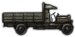 早期卡车 大战期间，各国军队开始使用基本的民用卡车运送补给与牵引装备。此后它们已成为大多数军队不可或缺的一部分 |
1936 | 165 days | – | |
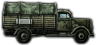 卡车 步兵摩托化是军队机械化的第一步。民用卡车很容易改装用于军事用途：运送士兵、牵引火炮以及载运装备与补给。这极大地提高了步兵单位的战略机动性，否则他们只能依靠徒步行军。 |
1936 | 220 days | 早期卡车 | |
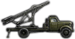 摩托化火箭炮 此类多管火箭炮向目标区域投放炸药的速度比常规火炮更快，但精度更低，且重新装填所需时间更长。由于安装在卡车上，这种型号能够在敌人还击之前发动攻击并转移阵地。 |
1939 | 165 days | 卡车 |
机械化
机械化科技专注于改进 机械化单位，并可受益于摩托化科技加成。与
机械化单位，并可受益于摩托化科技加成。与 摩托化步兵相比，
摩托化步兵相比， 机械化步兵速度更慢、造价更高，也更耗燃料（尽管仍远快于普通的
机械化步兵速度更慢、造价更高，也更耗燃料（尽管仍远快于普通的 步兵），但其硬度高得多，并能提供多得多的防御和兵力。它们的生产成本也有可能通过使用
步兵），但其硬度高得多，并能提供多得多的防御和兵力。它们的生产成本也有可能通过使用 陆军经验设计变体来降低；再加上它们因高兵力而装备损失很少，一旦战斗伤亡开始累积，这实际上能让它们比
陆军经验设计变体来降低；再加上它们因高兵力而装备损失很少，一旦战斗伤亡开始累积，这实际上能让它们比 摩托化步兵更划算。尽管其进攻属性不如坦克，但只要有足够的升级，
摩托化步兵更划算。尽管其进攻属性不如坦克，但只要有足够的升级， 机械化步兵在进攻端也能出人意料地强悍，与摩托化反坦克单位配合使用时甚至可以与敌方坦克正面抗衡。
机械化步兵在进攻端也能出人意料地强悍，与摩托化反坦克单位配合使用时甚至可以与敌方坦克正面抗衡。
| 科技 | 年份 | 基础时间 | 前置条件 | 效果 |
|---|---|---|---|---|
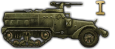 机械化装备 I 机械化步兵是配备装甲运兵车（APC）或步兵战车（IFV）用于运输与作战的步兵。机械化步兵与摩托化步兵的区别在于：其载具能提供一定防护以抵御敌方火力，而摩托化步兵使用的是无装甲的轮式载具（卡车或吉普车）。 |
1940 | 220 days | 卡车 | |
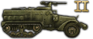 机械化装备 II 机械化步兵是配备装甲运兵车（APC）或步兵战车（IFV）用于运输与作战的步兵。机械化步兵与摩托化步兵的区别在于：其载具能提供一定防护以抵御敌方火力，而摩托化步兵使用的是无装甲的轮式载具（卡车或吉普车）。 |
1942 | 220 days | 机械化装备 I | |
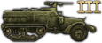 机械化装备 III 机械化步兵是配备装甲运兵车（APC）或步兵战车（IFV）用于运输与作战的步兵。机械化步兵与摩托化步兵的区别在于：其载具能提供一定防护以抵御敌方火力，而摩托化步兵使用的是无装甲的轮式载具（卡车或吉普车）。 |
1944 | 330 days | 机械化装备 II |
两栖牵引车
两栖牵引车或Amtracs是机械化步兵的特种部队版本，更适合湿软地形和海军登陆；而作为特种部队，它们受国家特种部队上限的限制。尽管与机械化同类相比突破更低、燃料消耗高得多，也不能像它们那样用 陆军经验来自定义减价，但两栖牵引车不仅在
陆军经验来自定义减价，但两栖牵引车不仅在 Marshes、
Marshes、
 河流和 两栖登陆中获得地形加成，还能受益于特种部队攻击加成，例如来自特种部队学说和突击队最高统帅部的加成。
河流和 两栖登陆中获得地形加成，还能受益于特种部队攻击加成，例如来自特种部队学说和突击队最高统帅部的加成。
这些科技还可以同时受益于摩托化和机械化科技加成，以及海军运输相关科技的加成。
| 科技 | 年份 | 基础时间 | 前置条件 | 效果 |
|---|---|---|---|---|
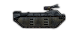 基础两栖牵引车 两栖牵引车（即 Amtrac）能让海军陆战队在装甲防护下登陆海滩。但代价是燃油效率低下。 |
1941 | 220 days | 机械化装备 I | |
改进型两栖牵引车 这些两栖牵引车相比基础型号有多项改进，例如便于在海滩卸货的尾部装卸跳板。 |
1943 | 220 days | 基础两栖牵引车 |
装甲车
 装甲车及其轻型装甲侦察同类随 La Résistance 提供。它们实际上是分别比
装甲车及其轻型装甲侦察同类随 La Résistance 提供。它们实际上是分别比 轻型坦克和
轻型坦克和 装甲侦察更弱、更软、快得多且略便宜的替代品。理论上，它们的定位介于轻型坦克与摩托化步兵之间，算是一种混合角色，不过玩家可能很难为这一细分定位找到实际用途。
装甲侦察更弱、更软、快得多且略便宜的替代品。理论上，它们的定位介于轻型坦克与摩托化步兵之间，算是一种混合角色，不过玩家可能很难为这一细分定位找到实际用途。
有了 一步不退，它们不幸地远不如以坦克为基础的同类装备那样可定制。得益于坦克设计商，当它们的
一步不退，它们不幸地远不如以坦克为基础的同类装备那样可定制。得益于坦克设计商，当它们的 轻型坦克同类在游戏后期过时之后，它们可以换装更强的火炮，和/或被改装为坦克歼击车、
轻型坦克同类在游戏后期过时之后，它们可以换装更强的火炮，和/或被改装为坦克歼击车、 自行火炮或自行防空炮，而过时的装甲车升级仅限于逐步的变体，它们将永远被过时的装备所束缚。有了
自行火炮或自行防空炮，而过时的装甲车升级仅限于逐步的变体，它们将永远被过时的装备所束缚。有了 反抗暴政，它们还苦于需要专属于自己的军工组织，而这种装备不能用于任何其他类型的装备；反观以坦克为基础的同类装备，其军工组织可与那些也能用于其他类型坦克的装备共用，从而带来装甲车所缺乏的工业协同效应。
反抗暴政，它们还苦于需要专属于自己的军工组织，而这种装备不能用于任何其他类型的装备；反观以坦克为基础的同类装备，其军工组织可与那些也能用于其他类型坦克的装备共用，从而带来装甲车所缺乏的工业协同效应。
这些科技还可以受益于摩托化和装甲科技加成。
| 科技 | 年份 | 基础时间 | 前置条件 | 效果 |
|---|---|---|---|---|
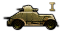 战间期装甲车 此前的装甲车不过是在商用车型上加装薄钢板，而这一型号则是从零开始设计，以承载装甲与轻型武器。 |
1914 | 220 days | 早期卡车 | |
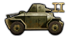 基础装甲车 改进的内部布局与额外的弹药储存空间，造就了更高效的装甲车。 |
1940 | 220 days | 战间期装甲车 | |
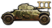 改进型装甲车 战场上的变化要求配备重得多的武器与更厚的装甲，以击败敌方轻型单位并存活到归来报信。 |
1942 | 220 days | 基础装甲车 | |
反坦克装甲车 我们的轻型机械化单位终将在某个时候与敌方坦克部队接触。为其研制一种专门的反坦克型号，能让它们有一战之力。 |
1942 | 110 days | 改进型装甲车 |
特种部队
除了常规、摩托化和机械化步兵之外，还有三种专业步兵类型，称为特种部队或SF（不要与陆军学说优势火力混淆）： 海军陆战队、
海军陆战队、 山地兵和
山地兵和 伞兵。这些单位在特定情况下很有用。它们只需要标准步兵装备，但与
伞兵。这些单位在特定情况下很有用。它们只需要标准步兵装备，但与 步兵相比往往需要更多。
步兵相比往往需要更多。
两栖牵引车和两栖坦克单位也算作特种部队单位。前者更接近 机械化单位而非
机械化单位而非 步兵，并且需要专属的专用motorized equipment。后者是依赖armor technology的装甲单位。有了
步兵，并且需要专属的专用motorized equipment。后者是依赖armor technology的装甲单位。有了 一步不退，它们还可以由轻型、中等和重型底盘建造，并使用坦克设计商。
一步不退，它们还可以由轻型、中等和重型底盘建造，并使用坦克设计商。
每个国家都有一个特种部队上限，它决定了该国最多可以部署多少个特种部队营。该上限取以下两者中的较大值：24[3]个营，或占其余已部署师中非特种部队营总数 5%[4]的营数。如果改动会使部队超过特种部队上限，则师不能被更改、训练、更换为其他师编制，其师编制也不能被调整。默认情况下，若没有任何加成而想把特种部队上限提高到默认的 24 以上，则每多一个特种部队营，就需要在 480 个非特种部队营的平衡点之上再多出 20 个。例如，25 个特种部队营需要 500 个非特种部队营，26 个需要 520 个，27 个需要 540 个，依此类推。这些营不需要满装备也不需要满兵力，它们只需隶属于已部署到战场上的师即可。
特种部队上限也可以通过某些政治顾问、最高统帅部职位、国策以及影响国家精神的决议来提高。有了反抗暴政，可部署的特种部队数量可以通过特种部队学说来提高，既可以直接提高特种部队上限，也可以降低某些单位对该上限的占用。没有反抗暴政时，特种部队上限可以通过 扩大特种部队项目特种部队集中 科技来提高。
科技来提高。
海军陆战队
 海军陆战队是经过专门训练、用于在湿软地形作战并执行两栖登陆的步兵。它们在越过湿软地形进攻时以及海军登陆期间获得加成。海军陆战队单位在得到Engineers或其
海军陆战队是经过专门训练、用于在湿软地形作战并执行两栖登陆的步兵。它们在越过湿软地形进攻时以及海军登陆期间获得加成。海军陆战队单位在得到Engineers或其 Pioneer、 装甲工兵或 突击工兵同类支援时非常有效。
Pioneer、 装甲工兵或 突击工兵同类支援时非常有效。
| 科技 | 年份 | 基础时间 | 前置条件 | 效果 |
|---|---|---|---|---|
海军陆战队 I 专精两栖作战的部队正变得愈发不可或缺。随着我们的海军步兵获得专用登陆艇与专门训练的支持，临时拼凑的方法与装备已成为过去。 |
1936 | 220 days | – | |
海军陆战队 II 两栖作战需要不断创新。改进的后勤支援与可移动港口能让我们的海军陆战队实施原本可能无法完成的登陆。 |
1939 | 165 days | 海军陆战队 I |
|
海军陆战队 III 海军陆战队不只是两栖步兵。未来，我们的陆战队将成为纪律最严明、组织最完善的特种部队之一。 |
1943 | 220 days | 海军陆战队 II |
|
山地步兵
 山地兵或山地步兵是擅长在崎岖地形（例如
山地兵或山地步兵是擅长在崎岖地形（例如 丘陵和
丘陵和 Mountains）中机动和作战的专业步兵。
Mountains）中机动和作战的专业步兵。
| 科技 | 年份 | 基础时间 | 前置条件 | 效果 |
|---|---|---|---|---|
山地步兵 I 在山脉中作战会让部队面临诸多危险，但有时无法避免。通过为士兵提供针对这种环境的专门训练，我们可以把这些风险降到最低。 |
1936 | 220 days | – | |
山地步兵 II 不止于求生，我们的部队还可以接受训练，学会利用山地取得优势。凭借轻型装备与骡马运输，他们在这类地形中的机动能力胜过其他步兵。 |
1939 | 165 days | 山地步兵 I |
|
山地步兵 III 为在高海拔与低温环境下执行最艰苦的山地任务做准备，需要我们的山地部队接受非凡的训练并具备严明的纪律。 |
1943 | 220 days | 山地步兵 II |
|
伞兵
 伞兵是唯一可以空投到战场上的单位类型，它们通过运输机进行空投。这使它们能够在敌后以及其他单位难以到达的地点执行行动。需要注意的是，将伞兵与其他一线营混编的师无法空投。
伞兵是唯一可以空投到战场上的单位类型，它们通过运输机进行空投。这使它们能够在敌后以及其他单位难以到达的地点执行行动。需要注意的是，将伞兵与其他一线营混编的师无法空投。
AI 会在战斗中使用伞兵，但从不使用它们进行空降。
| 科技 | 年份 | 基础时间 | 前置条件 | 效果 |
|---|---|---|---|---|
伞兵 I 通过将空降部队纳入我们的军队，我们可以实施强行突入，并把关键部队部署到此前无法到达的地区，从而带来新的战术机会。 |
1936 | 220 days | – | |
伞兵 II 从仅有少数伞兵的小规模行动过渡到更大的空降师，为大规模空降登陆铺平了道路，使这些部队不再只是新奇事物，而成为战争中自然而然的一部分。 |
1939 | 165 days | 伞兵 I |
|
伞兵 III 学会根据天气调整伞降作战、统一跳伞靴等装备，并延长专门训练，将把这些危险任务中的混乱与风险降到最低。 |
1943 | 220 days | 伞兵 II |
|
特种部队集中
这些科技会提升特种部队单位的能力，也可能增加其数量。第一个科技会提升其适应速度。此后，国策树分为两个方向。一个方向是更严苛地训练特种部队，以提升其技能，并让它们在被补给之前能战斗更久。另一个方向是扩大特种部队训练项目以招收更多新兵：特种部队数量会更多，但阻力更大，速度也不那么高。不过归根结底，它们仍将是精锐部队，并能通过发展训练在最为严酷的条件下作战时更加娴熟。
| 科技 | 年份 | 基础时间 | 前置条件 | 效果 |
|---|---|---|---|---|
特种部队 非常规作战需要专门训练。我们需要确保部队做好准备，并能够适应恶劣条件。 |
1938 | 220 days | – |
|
高级特种部队训练 通过大量训练，我们可以确保特种部队的表现远超普通士兵。与「扩大特种部队计划」互斥。 |
1940 | 220 days | 特种部队 Excludes 扩大特种部队项目 |
|
极端环境训练 我们需要有能力在最恶劣的环境中作战。有了合适的训练与装备，我们的部队将能够在最极端的条件下战斗。 |
1942 | 220 days | 高级特种部队训练 |
|
扩大特种部队项目 特种部队能够执行普通士兵无法完成的任务。我们需要扩大训练计划，让更多士兵达到合格标准。与「高级特种部队训练」互斥。 |
1940 | 220 days | 特种部队 Excludes 高级特种部队训练 |
|
生存训练 我们的特种部队常常要在敌后且补给短缺的情况下作战。我们需要训练他们忍受恶劣天气，并在补给有限的情况下战斗。 |
1942 | 220 days | 扩大特种部队项目 |
|
精锐部队 只有精英中的精英才能成为特种部队。通过训练的士兵将更加强壮、更加迅捷，并且比任何人都更加奋勇作战。 |
1944 | 220 days | 以下之一： |
|
秘密科技
这些科技仅在适当条件下对特定国家可用。
| 科技 | 前置条件 | 效果 |
|---|---|---|
丛林战 专门训练，使我们的士兵在丛林中作战得力。 |
可解锁此科技： | |
丛林训练
|
可解锁此科技：
|
|
沙漠训练
|
可解锁此科技：
|
|
丘陵训练
|
可解锁此科技：
|
|
城市训练
|
可解锁此科技：
|
|
山地伞兵
|
可解锁此科技：
|
|
轻型步兵师学说 减少步兵师中支援火力的数量，能让它们更加灵活，并在城市与森林等受限地形作战中占据优势。 |
可解锁此科技：
|
|
山地战 专门训练，使我们的士兵在山脉中作战得力。 |
可解锁此科技： | |
山地防御训练 专门训练将使我们的部队能更好地在山地地形中防御。 |
可解锁此科技：
|
|
山猫装甲车
|
可解锁此科技：
|
|
Militias
|
可解锁此科技：
|
启用 |
自行车步兵 配备自行车的普通步兵比徒步行军的步兵机动性更强，而代价非常低廉。 |
开局即拥有此科技： 可解锁此科技： |
启用 |
骆驼骑兵 骑驼步兵。造价更高，但用途广泛。 |
开局即拥有此科技： 在
可解锁此科技： |
启用骆驼骑兵 |
惩罚营 惩罚营为被定罪的红军士兵与军官提供了为祖国流血、洗刷过去可耻或不光彩行为的机会。 |
可解锁此科技：
|
启用惩戒营 |
突击营
|
可解锁此科技： | 启用突击营 |
农村大起义
|
可解锁此科技：
|
|
| ETH_improved_irregular_infantry_tech | – |
|
| molotov_cocktails_tech | 可解锁此科技：
|
|
| winter_logistics_support_tech | 可解锁此科技： | 启用 |
| long_range_patrol_support_tech | 可解锁此科技：
|
启用远程巡逻 |
| sami_pathfinders_tech | 可解锁此科技：
|
|
| lotta_svard_tech | 可解锁此科技： |
|
| SWE_sami_support_tech | 可解锁此科技： |
|
丛林先锋工兵
|
可解锁此科技： | 启用丛林先锋工兵 |
内河海军
|
可解锁此科技： |
|
| sturmtruppe_battalion_tech | 可解锁此科技：
|
启用 突击队营 |
重型装甲车
|
可解锁此科技：
|
|
阿登猎兵 ( |
开局即拥有此科技： |
|
阿登猎兵
|
开局即拥有此科技： |
|
战象骑兵 骑象步兵。造价更高，但对付步兵效果出色 |
可解锁此科技： | 启用 战象骑兵 |
| uranium_tipped_bullets | 可解锁此科技：
|
|
| revolutionary_mass_assault | 可解锁此科技：
|
|
| PHI_battalion_combat_teams | 可解锁此科技：
|
|
| JAP_lighter_tanks | 开局即拥有此科技： |
|
| JAP_silver_wheels | 开局即拥有此科技： |
|
| MUN_CZE_establish_air_defense_zones | 可解锁此科技：
|
static_anti_air_hit_chance_factor = 0.1 |
| MUN_merge_the_financial_and_state_guard_tech | 可解锁此科技：
|
military_police = {
max_strength = 5 |
| MUN_anti_tank_development_tech | 可解锁此科技：
|
anti_tank = {
ap_attack = 0.05 } anti_tank_brigade = { ap_attack = 0.05 } artillery = { ap_attack = 0.05 } artillery_brigade = { ap_attack = 0.05 |
| MUN_horska_artillery | 可解锁此科技：
|
artillery_brigade = {
mountain = { attack = 0.10 movement = 0.10 } hills = { attack = 0.10 movement = 0.10 |
| MUN_recon_in_force | 可解锁此科技：
|
category_recon = {
max_strength = 5 recon = 0.10 |
| MUN_improved_supply_dumps | 可解锁此科技：
|
|
| MUN_intergrate_fortification_engineers | 可解锁此科技：
|
|
| MUN_camo_netting | 可解锁此科技：
|
|
| northern_territory_recon_support_tech | 可解锁此科技：
|
启用(Unrecognized string "Northern Recon support units" for Template:Icon) |
参考资料
| 政治 | 意识形态 • 阵营 • 国策 • 理念 • 政府 • 傀儡国 • 流亡政府 • 外交 • 世界紧张度 • 内战 • 占领 • 力量均势 |
| 生产 | 贸易 • 生产 • 建造 • 装备 • 燃料 • 军工组织 • 国际市场 |
| 科研与科技 | 科研 • 步兵科技 • 支援连科技 • 装甲科技（也包括 未拥有绝不后退）• 火炮科技 • 陆军学说 • 特种部队学说 • 海军科技（也包括 未拥有全民持枪）• 海军支援科技 • 海军学说 • 空军科技（也包括 未拥有以血盟誓）• 空军学说 • Engineering科技 • Industry科技 • 特殊项目 • 科学家 |
| 军事与战争 | 战争 • 和平会议 • 陆军单位 • 陆战 • 师编制设计 • 坦克设计 • 陆军编制器 • 集团军 • 指挥官 • 作战计划 • 战斗战术 • 舰船 • 舰船设计（伦敦海军条约）• 海战 • 飞机设计 • 空战 • 经验 • 军官团 • 损耗与事故 • 后勤 • 人力 • 核弹 • 突袭 |
| 间谍活动 | 情报 • 情报机构 • 特工 • 任务 • 行动 |
| 地图 | 地图 • 省份 • 地形 • 天气 • 州 |
| 事件与决议 | 事件 • 决议 |